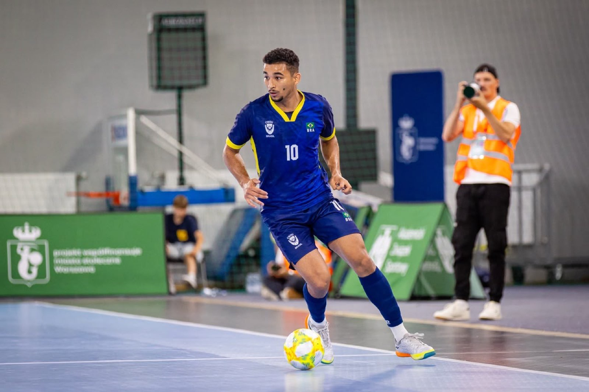
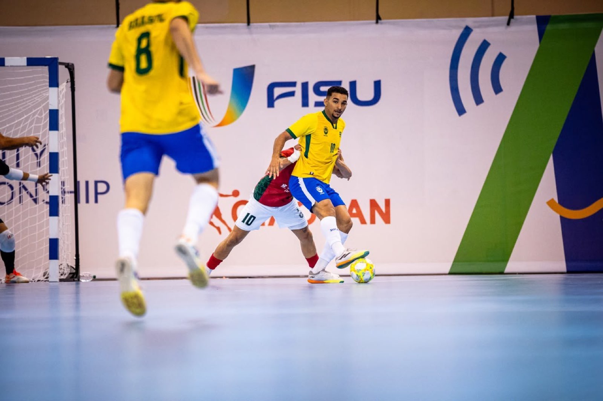
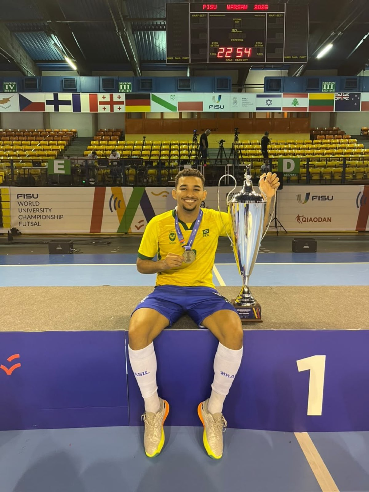

Com grife de campeão por duas vezes pela seleção brasileira, o pivô Antônio Francisco Taveira Soares, 21 anos, chega para fortalecer o time da Prefeitura de Chapecó/Chapecoense/Unochapecó. Conhecido no futsal como Toninho, ele se apresenta nos próximos dias ao Verdão das Quadras para se juntar ao grupo comandado pelo técnico Leonardo Schroeder.
Nascido em Mombaça, no interior do Ceará, Toninho começou nas categorias de base do Frankana/Parque 10. Neste clube, o jogador conquistou o título do Campeonato Cearense Sub-18. A trajetória no esporte teve sequência no Corinthians, onde faturou as séries Prata e Ouro sub-18. Em 2023, o atleta passou pelo Blumenau, atuando pela primeira vez em Santa Catarina.

Depois, Toninho retornou a São Paulo para jogar pelo Magnus, em 2024, ajudando a equipe de Sorocaba a vencer o Estadual Sub-20. Apesar da pouca idade, o pivô já fazia parte do elenco principal. O excelente desempenho rendeu o chamado para vestir a camisa do Brasil na Liga Sul-Americana Sub-20, ajudando a erguer o troféu de primeiro lugar.
Em 2025, Toninho se transferiu para o Foz Cataratas. Lá, disputou 26 partidas e marcou cinco gols, somando as participações na Liga Nacional e na Série Ouro do Paranaense. Antes do fim da temporada, em setembro, ele foi contratado pelo Nanzaby, da Indonésia, permanecendo até o fim do primeiro semestre deste ano.

Gols na final
No dia 23 de junho, Toninho recebeu uma notícia que deu ainda mais peso à carreira: a convocação para defender a seleção brasileira no Mundial Universitário, na Polônia. O torneio começou no dia 1º de julho e terminou nesta terça-feira (7/7), e a experiência para o pivô não poderia ser melhor. Ele se sagrou campeão, aumentando a coleção de conquistas pela Amarelinha. A taça veio após vitória por 8 a 5 sobre Portugal na final. Aliás, Toninho marcou dois gols na decisão.

“Feliz e motivado”
Com mais um título importante no currículo, Toninho desembarcará em breve no Oeste catarinense para reforçar a Chape Futsal. “Estou muito feliz e motivado com este desafio. Espero que possamos fazer uma grande temporada juntos e conquistar os nossos objetivos”, disse o novo contratado. O jovem pivô vem para somar em um ano repleto de competições, como o Campeonato Brasileiro, a Copa Sul, o Catarinense Série Ouro e a Copa SC.
Crédito das fotos: Arquivo pessoal